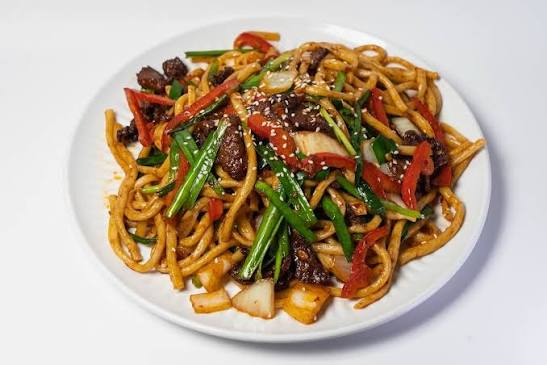

Home
Uyghur-Lagman

Description
Uyghur lagman is a traditional noodle dish made with hand-pulled
noodles, tender meat, and a flavorful vegetable sauce. It usually
includes beef or lamb, bell peppers, tomatoes, onions, garlic, and spices.
The dish is rich, colorful, and filling, with a slightly spicy and savory taste.
Ingredients
- 1 pound beef or lamb, cut into small strips
- 2 tablespoons vegetable oil
- 1 onion, sliced
- 2 cloves garlic, minced
- 2 tomatoes, chopped
- 1 bell pepper, sliced
- 1 carrot, sliced
- 1 potato, diced
- 1 cup green beans or celery, chopped
- 2 tablespoons tomato paste
- 1 teaspoon salt
- ½ teaspoon black pepper
- 1 teaspoon cumin
- ½ teaspoon paprika or chili flakes
- 2 cups water or broth
- Hand-pulled noodles or thick noodles
- Fresh cilantro or green onions for garnish
Steps
- Prepare the noodles according to the package instructions, or make hand-pulled noodles if using homemade dough.
- Heat vegetable oil in a large pan or pot over medium heat.
- Add the beef or lamb and cook until browned.
- Add the onion and garlic, then cook for 2–3 minutes until fragrant.
- Add the tomatoes and tomato paste, then stir well.
- Add the bell pepper, carrot, potato, green beans or celery, salt, black pepper, cumin, and paprika or chili flakes.
- Pour in water or broth and stir everything together.
- Cover and simmer for 25–30 minutes, or until the meat and vegetables are tender.
- Place the cooked noodles in a bowl.
- Spoon the meat and vegetable sauce over the noodles.
- Garnish with fresh cilantro or green onions and serve warm.